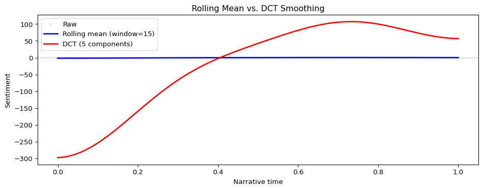

This page documents implementation details, design decisions, and comparisons with the R syuzhet package. These notes are intended for users who want to understand the computational methods or need to reproduce results from the R ecosystem.
The Discrete Cosine Transform (DCT)
The DCT is a key component of the smoothing pipeline, converting raw sentiment scores into the smooth “narrative arc” curves you see in trajectory plots.
Why DCT for narrative analysis?
The Discrete Cosine Transform is a signal processing technique that decomposes a time series into frequency components—similar to a Fourier transform but using only real numbers (no complex arithmetic). For sentiment trajectories:
Low-frequency components represent gradual, long-term emotional trends (the overall arc)
By keeping only the lowest-frequency components, we reveal the story’s underlying emotional structure while filtering out local variation (Jockers 2015).
Mathematical formulation
The implementation uses DCT-II (forward transform) and DCT-III (inverse transform):
The red line (DCT smooth) captures the broad trajectory while ignoring sentence-level noise. The low_pass_size parameter controls how many frequency components to retain—smaller values produce smoother curves.
Choosing low_pass_size
The low_pass_size parameter determines how many DCT coefficients to keep:
2-5: Very smooth, shows only the broadest pattern (useful for high-level comparisons)
5-10: Balanced smoothing (default in most examples)
10-20: Preserves more detail, can show secondary peaks
Both smoothing methods reduce noise but work differently:
Method
How it works
Best for
Rolling mean
Averages neighboring points with a sliding window
Preserving local features, medium-term trends
DCT
Keeps low-frequency spectral components
Global narrative shape, comparing arc types
from moodswing import rolling_mean# Compare the two approachesrolling_smoothed = rolling_mean(noisy_scores, window=15)fig, ax = plt.subplots(figsize=(10, 4))ax.plot(time, noisy_scores, 'o', alpha=0.2, markersize=2, color='gray', label='Raw')ax.plot(time, rolling_smoothed, 'b-', linewidth=2, label='Rolling mean (window=15)')ax.plot(time, smoothed, 'r-', linewidth=2, label='DCT (5 components)')ax.axhline(0, color='k', linestyle=':', alpha=0.3)ax.set_xlabel('Narrative time')ax.set_ylabel('Sentiment')ax.legend()ax.set_title('Rolling Mean vs. DCT Smoothing')plt.tight_layout()plt.show()

Rolling mean (blue) follows local trends more closely. DCT (red) emphasizes the global shape. For narrative arc analysis, DCT is typically preferred because it reveals archetypal patterns (Reagan et al. 2016).
Normalization: Range vs. Z-score
prepare_trajectory() offers two normalization modes to make scores comparable across texts:
For most literary analysis, range normalization is recommended because it preserves the shape of the original distribution.
Comparison with R syuzhet
The Python moodswing package aims for compatibility with the R syuzhet package while adapting to Python conventions.
What’s identical
Lexicons: The four dictionaries (Syuzhet, AFINN, Bing, NRC) use the same word-score mappings
DCT algorithm: Produces mathematically identical results given the same input
Smoothing approach: Same spectral filtering logic
Key differences
1. Hyphenated words
R syuzhet: Strips hyphens before lexicon lookup
# In R: "well-intentioned" becomes "well" + "intentioned"get_sentiment("well-intentioned", method="syuzhet")
Python moodswing: Preserves hyphens by default
from moodswing import DictionarySentimentAnalyzeranalyzer = DictionarySentimentAnalyzer()# "well-intentioned" is looked up as a single tokenscore = analyzer.sentence_scores(["The well-intentioned effort failed."], method="syuzhet")print(f"Score: {score}")
Score: [-0.5]
Why the difference? Python’s NLTK tokenizer treats hyphenated words as single tokens, which is linguistically defensible (e.g., “well-intentioned” has a different meaning than “well” + “intentioned” separately).
To match R behavior: Pre-process your text to remove hyphens before scoring:
R syuzhet: Uses get_sentences() from the stringr package Python moodswing: Uses NLTK’s Punkt tokenizer
Both handle most texts similarly, but edge cases (especially with abbreviations or unusual punctuation) may differ slightly. NLTK’s Punkt is trained on the Penn Treebank and handles English abbreviations well.
3. NRC language support
R syuzhet: NRC lexicon is English-only in most installations Python moodswing: Ships with multilingual NRC data
English 'love': {'positive': 1.0, 'joy': 1.0}
French 'amour': {'positive': 1.0, 'anticipation': 1.0, 'joy': 1.0, 'trust': 1.0}
Validation against R
The package includes test data from R syuzhet to verify compatibility:
import pandas as pd# Load reference data from R syuzhet vignette# (This is stored in tests/data/mb_sentiment.tsv)# Shows that DCT outputs match R to floating-point precisiontest_file ="../tests/data/mb_sentiment.tsv"try: r_reference = pd.read_csv(test_file, sep="\t")print("R reference data columns:", r_reference.columns.tolist())print(f"First few rows:\n{r_reference.head()}")exceptFileNotFoundError:print("Reference data not found (only available in package source)")
R reference data columns: ['sentiment', 'sentence']
First few rows:
sentiment sentence
0 1.20 Part I Chapter One We were in class when the h...
1 0.25 Those who had been asleep woke up, and every o...
2 0.00 The head-master made a sign to us to sit down.
3 1.50 Then, turning to the class-master, he said to ...
4 1.05 If his work and conduct are satisfactory, he w...
Benefits: - Automatic __init__, __repr__, etc. - Type hints throughout - slots=True reduces memory overhead - Easy to instantiate with custom components
Why separate sentence splitting?
Unlike R syuzhet’s all-in-one functions, moodswing separates sentence splitting from scoring:
Benefits: - Reuse sentence splits across multiple analyses - Swap in custom sentence splitters - Apply preprocessing between steps - Clearer data flow for debugging
Immutability and statelessness
Analyzers are designed to be reusable without side effects:
analyzer = DictionarySentimentAnalyzer()scores1 = analyzer.sentence_scores(text1)scores2 = analyzer.sentence_scores(text2) # No interference
This makes parallel processing safe and results reproducible.
References
Jockers, Matthew L. 2015. “Syuzhet: Extract Sentiment and Plot Arcs from Text.”The R Journal 7 (1): 37–51. https://doi.org/10.32614/RJ-2015-004.
Reagan, Andrew J, Lewis Mitchell, Dilan Kiley, Christopher M Danforth, and Peter Sheridan Dodds. 2016. “The Emotional Arcs of Stories Are Dominated by Six Basic Shapes.”EPJ Data Science 5 (1): 1–12. https://doi.org/10.1140/epjds/s13688-016-0093-1.